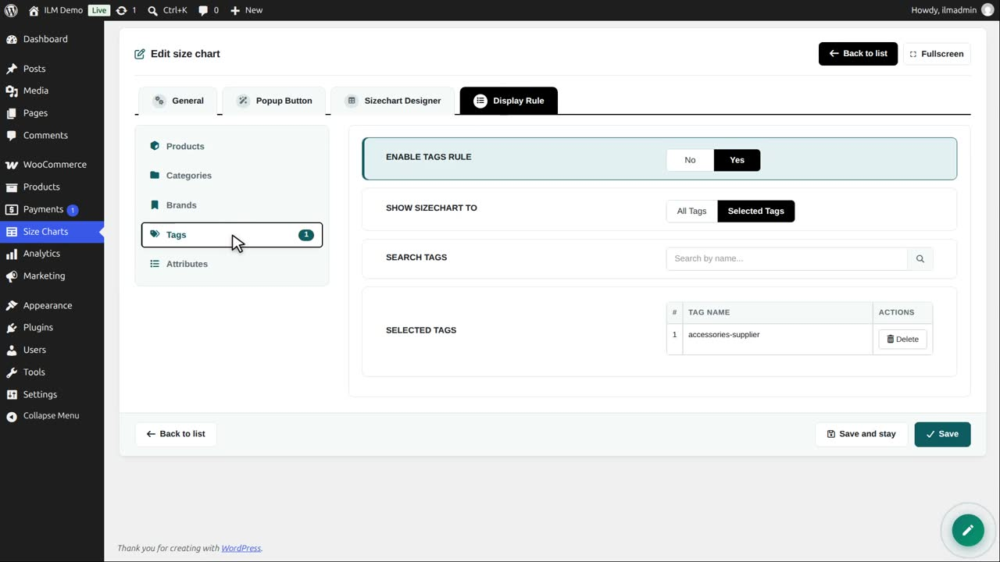
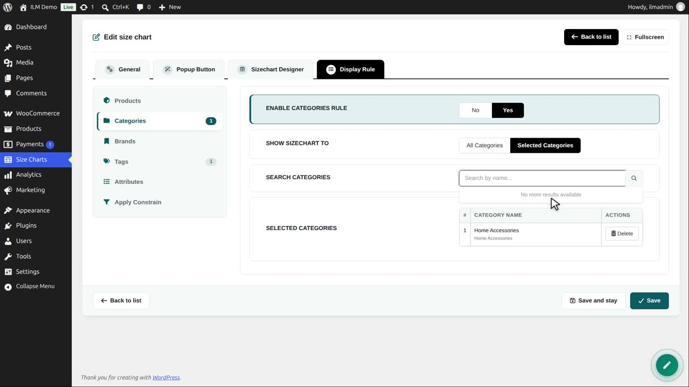
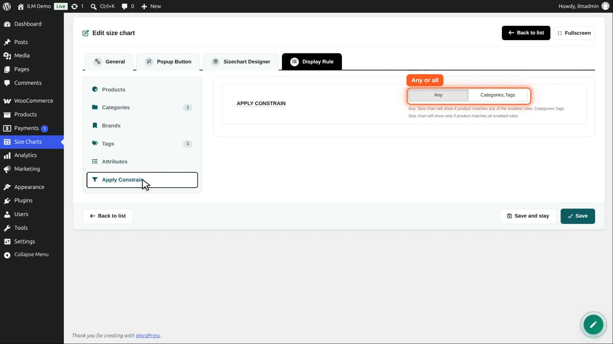
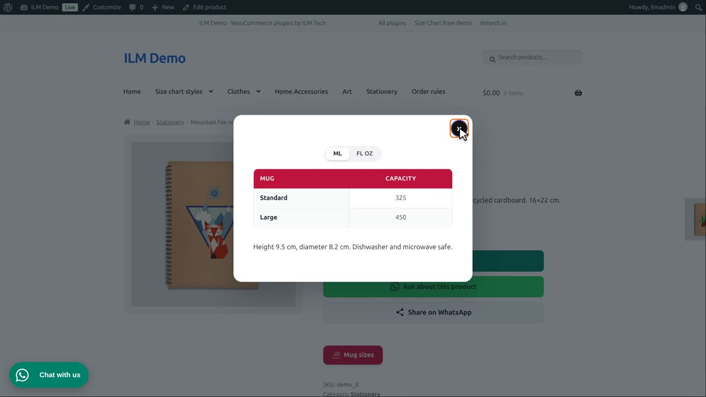
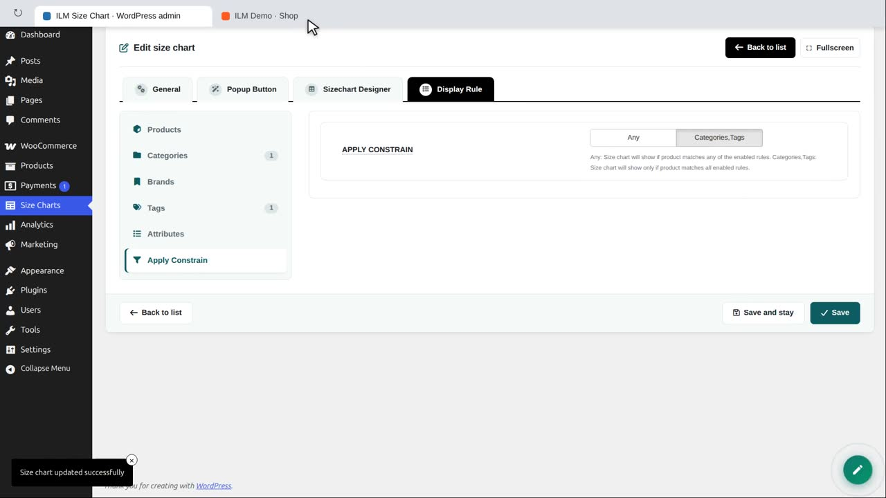
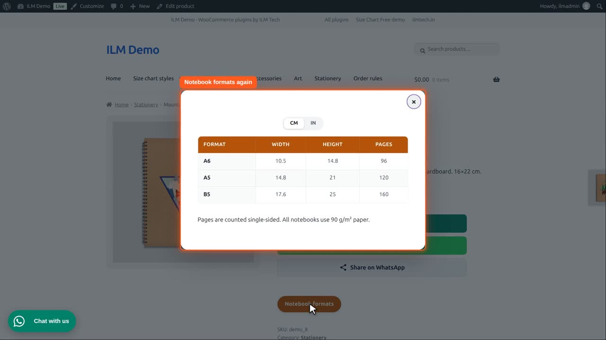

The Apply Constrain sub-tab (the last one, below Attributes) decides how several enabled rules work together. Any (the default): the chart shows when the product matches any one of the enabled rules. Choose the rule types instead (for example Categories,Brands) to show the chart only on products that match all of them — for example only on T-shirts of one brand.
The Mug sizes chart has a tag rule: the tag accessories-supplier. Notebooks and cushions have that tag too.

We add a second rule: Categories, Home Accessories, where the mugs are.

With two rules on, a new tab appears: Apply Constrain. Any shows the chart when one rule matches. The other button needs every rule to match.

With Any, a notebook with the same tag matches the tag rule, so it shows the mug sizes. That is not what we want.

So we choose the second button: the product must match the tag and the category.

Save. The notebook is not a home accessory, so it shows its own notebook chart again. The mugs still show the mug sizes.

Use Any to add up rules, and All to narrow them down.